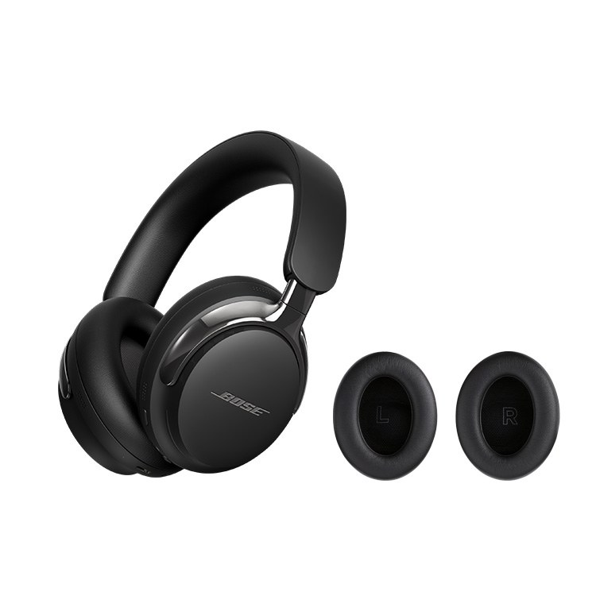
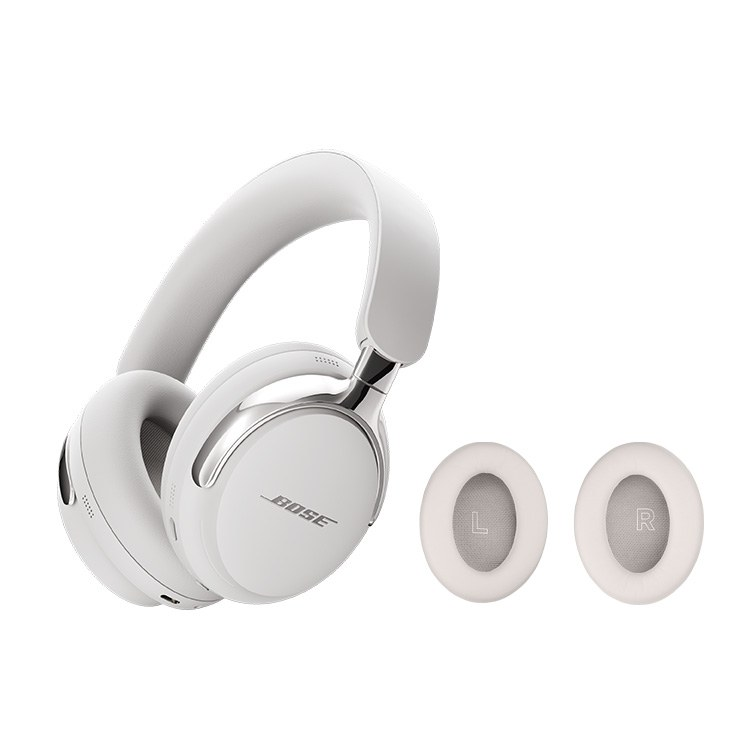
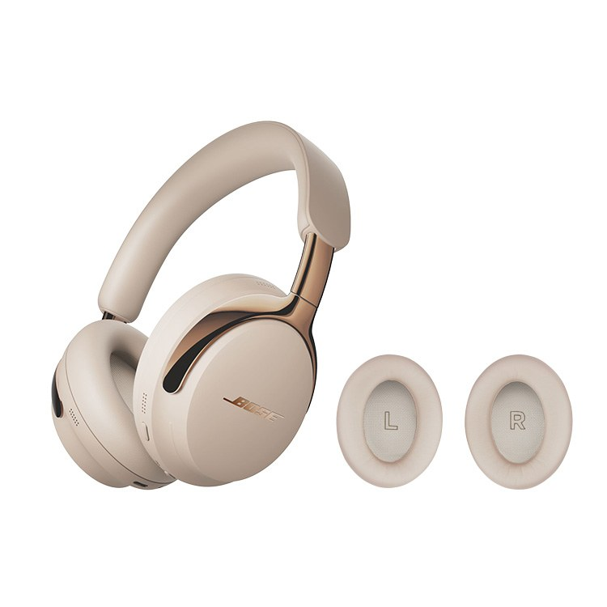
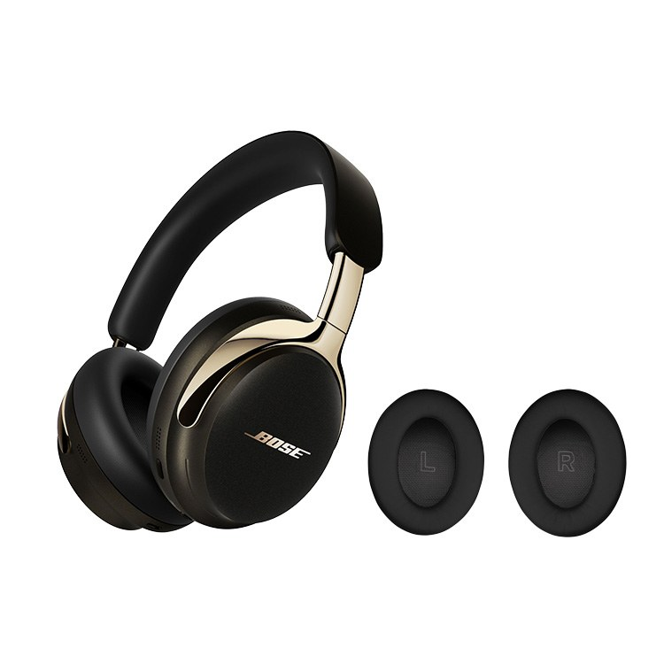

Bose QuietComfort Ultra Headphones 2nd Gen Review: Overview
This Bose QuietComfort Ultra Headphones 2nd Gen review looks at Bose's 2025 flagship noise-cancelling headphones, as sold in Korea by the Bose official store on Naver with an extra set of ear cushions. On Seoul's crowded subway lines, long KTX rides and 13-hour flights home, a good pair of noise-cancelling headphones is one of the most-used things in a commuter's bag.
We compared the official Bose specifications with the Korean store listing, and weighed what matters for daily use in Korea: battery life, comfort over a long commute, call quality on busy streets, and how easy it is to replace worn ear pads.
"Up to 30 hours of noise-cancelled listening, lossless USB-C audio and a spare set of ear cushions in the Korean official-store set."

What Changed from the First QC Ultra
- Lossless USB-C audio: wired digital playback at 16-bit, 44.1 or 48 kHz, which also gives low latency for gaming.
- Smarter noise cancelling: a new adaptive ANC algorithm, according to Bose.
- Cinema Mode: a new Immersive Audio setting that makes dialogue clearer for films and shows.
- Longer battery: up to 30 hours with ANC (previously 24), and you can now charge while listening.
- Auto standby: lay them flat or fold them into the case and they drop into a low-power mode that can last for months.
- New look: polished metal yokes and new colours, with the same $449 U.S. launch price as the first generation.


Using It Day to Day in Korea
Seoul Metro announcements, rattling trains and bus engines are exactly the kind of low, steady noise that active noise cancelling handles best. Aware Mode is handy when you need to hear your stop announced in Korean or English, and multipoint means you can stay connected to a laptop and a phone at the same time in a cafe.
Korean buyers often worry about ear pads wearing out in humid summers; that is why the official-store set with a spare pair of cushions is popular. The cushions are removable, so swapping them takes a minute rather than a trip to a service centre.


Key Specs
| Spec | Bose QC Ultra Headphones (2nd Gen) |
|---|---|
| Release | Announced Sept 10, 2025; on sale Oct 2, 2025 |
| Type | Around-ear, active noise cancelling, removable cushions |
| Battery | Up to 30 h (ANC on), 23 h (Immersive Audio), 45 h (ANC off) |
| Charging | USB-C; about 3 h full charge; 15 min = about 3 h play |
| Bluetooth | 5.4, multipoint (2 devices); SBC, AAC, aptX Adaptive |
| Wired audio | Lossless USB-C (16-bit, 44.1/48 kHz) and 2.5 mm analogue cable |
| Weight | 0.583 lb (about 264 g) headphones only, per Bose |
| In the box | Headphones, carry case, 3.5–2.5 mm cable, USB-C cable |
| Korean set | Official Bose store on Naver, with spare ear cushions, 539,000 KRW at time of writing |
| U.S. price at launch | $449 |
Specifications are from Bose's official product page and press release and the Korean official-store listing; they were not lab-measured by us.
How It Compares
| Bose QC Ultra (2nd Gen) | Bose QC Ultra (1st Gen) | Open-ear sport headphones | |
|---|---|---|---|
| Noise cancelling | Adaptive ANC (refined) | Adaptive ANC | None (ears open) |
| Battery (ANC) | Up to 30 h | Up to 24 h | Around 12 h, no ANC |
| Lossless USB-C | Yes | No | No |
| Charge while listening | Yes | No | Varies |
| Best for | Flights, commutes, focus work | Same, at a lower price if discounted | Running and outdoor awareness |
Pros & Cons
| Pros | Cons |
|---|---|
| Class-leading noise cancelling for subways and flights | Premium price (539,000 KRW in Korea) |
| Up to 30 h battery with ANC; quick 15-minute top-up | Lossless mode only works wired over USB-C |
| Multipoint, aptX Adaptive and Google Fast Pair | Bulkier than earbuds for small bags |
| Korean official set includes spare ear cushions | No power adapter in the box |
Who It Suits (and Who Should Skip It)
- Yes: Long-haul travellers flying in and out of Incheon.
- Yes: Daily subway and bus commuters who want quiet without cranking the volume.
- Yes: Remote workers and students studying in noisy cafes.
- No: Runners and cyclists who need to hear traffic — choose open-ear headphones.
- No: Anyone on a tight budget; the 1st Gen or a mid-range model costs far less.
Bose QC Ultra 2nd Gen FAQ
What is new in the Bose QuietComfort Ultra Headphones (2nd Gen)?
Bose announced the 2nd Gen on September 10, 2025 and released it on October 2, 2025. The main upgrades are lossless wired audio over USB-C (16-bit, 44.1 or 48 kHz), a refined adaptive noise-cancelling algorithm, a new Cinema Mode for Immersive Audio, longer battery life (up to 30 hours with ANC), charging while you listen, smarter on-head detection and polished metal yokes.
How long does the battery last?
Bose rates it at up to 30 hours with noise cancelling on, up to 23 hours with Immersive Audio on and up to 45 hours with ANC off. A full charge takes about 3 hours, and a 15-minute quick charge gives about 3 hours of play, according to Bose.
What does the Korean official-store set include?
The Korean Naver listing we reviewed is sold by the Bose official store and bundles the 2nd Gen headphones with a spare set of ear cushions. At the time of writing it was listed at 539,000 KRW. The standard box contents, per Bose, are the headphones, a carry case, a 3.5 mm-to-2.5 mm audio cable and a USB-C to USB-C cable (no power adapter).
Does it work with both iPhone and Android?
Yes. It uses Bluetooth 5.4 with multipoint (two devices at once) and supports SBC and AAC, plus Qualcomm aptX Adaptive on Snapdragon Sound phones. Android users also get Google Fast Pair. Lossless playback needs a wired USB-C connection to a compatible source.
Is it a good choice for flights to and from Korea?
For a 10- to 14-hour flight between the U.S. and Incheon it makes sense: the 30-hour ANC battery covers a round trip, the 2.5 mm cable works with in-flight entertainment (with an airline adapter where needed), and it folds into its carry case. If you mainly want something small for the subway, compact earbuds may suit you better.
Bose QuietComfort Ultra Headphones (2nd Gen)
Check current U.S. pricing and colours for the 2nd Gen on Amazon (the Korean spare-cushion bundle is a Naver official-store set).